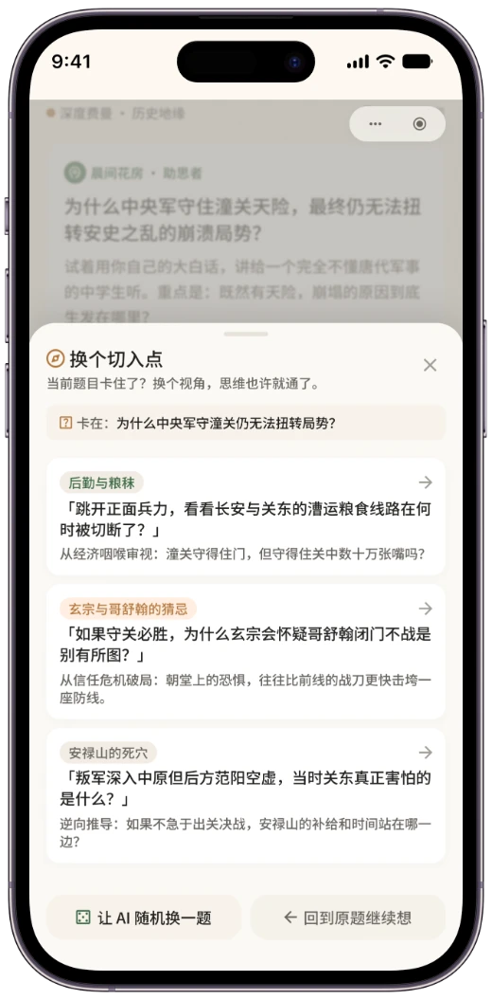
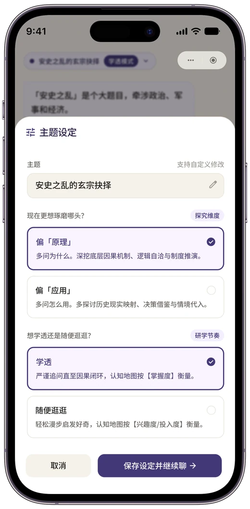
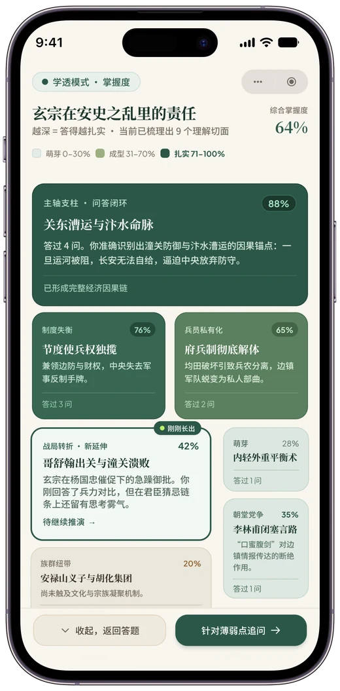
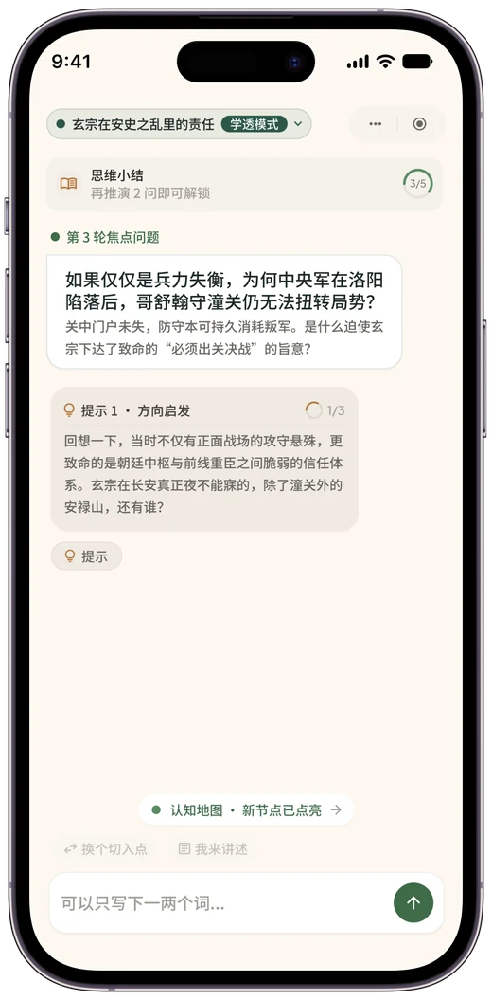
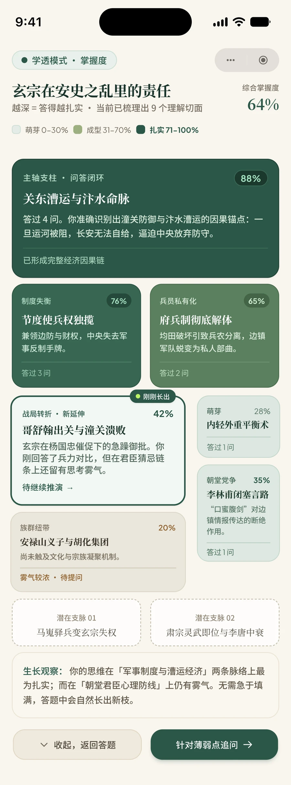
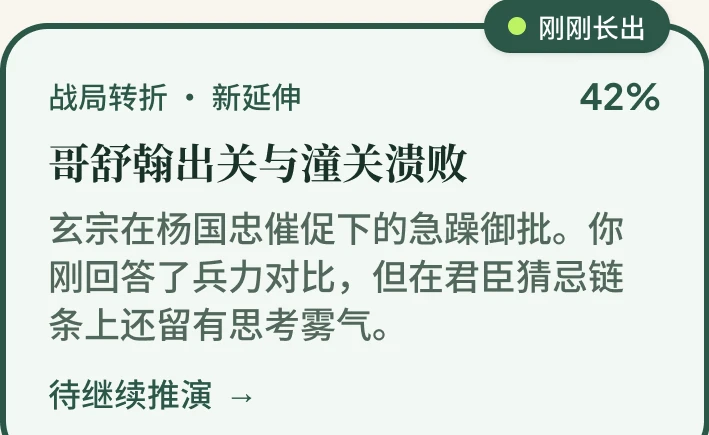
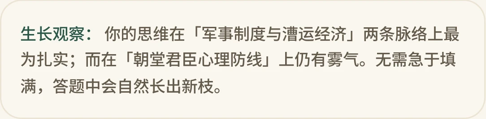

备考时我能读懂、能记住，却没法验证自己是不是真的理解了。问题出在只有输入、没有反馈——所以我把方向反过来。
市面上的学习工具都在解决「输入」，但缺的是反馈。费曼把方向反过来：AI 只负责在含糊的地方追问，思考留给用户自己。
掌握程度是看不见的，所以最后落到一张色块地图上：色越深，这一块越牢。



备考的时候我发现一个很难受的状态：书看完了，笔记也做了，但我说不清自己到底掌握到什么程度。能读懂、能记住，不等于真的理解了，不等于形成知识体系了。
市面上大部分学习工具提供了全面的资源——更好的讲义、更清晰的笔记、更多的题库。但我缺的不是输入，是反馈：一个能告诉我「你刚才那段复述里，哪里其实是含糊的、是有漏洞的」的产品。
费曼学习法的原义恰好就是这个：讲不清楚，就说明没懂。于是我把它做成产品——用户复述，AI 只负责追问和总结。
AI 学习工具最容易滑向「什么都能干」，然后什么都干不好。所以我先划了三条边界，并且写进 PRD 当作硬约束。
没有 AI 人格、没有头像、不寒暄。它不是陪你聊天的人，是一个只关心「你到底懂没懂」的对话对象。
随时能看答案，本身就是一条有心理成本的退路——它会让人放弃思考。
没有徽章、没有连续天数、没有排行榜、没有庆祝动画。成长的反馈在知识版图界面慢慢增长的板块，在学习总览里客观的总结。
用户答不上来时，看到的不是答案，而是三级渐进提示：方向启发 → 线索聚焦 → 逼近答案。每一级只把问题往前推一点，思考仍然是用户自己的。

「不庆祝、不审判」是一句调性描述，但它没法交给 AI 执行——每个人对它的理解都不一样。所以我把它拆成五条具体规则，写进系统提示词。
| 尺子 | 具体规则 |
|---|---|
| 怎么问 | 单点切入，难度随用户的表达热度递进；面对纯小白走「稀薄模式」——先问「这个印象是从哪来的？」 |
| 怎么接 | 接住用户的关键词碎片顺势追问；不替用户把思考做完 |
| 怎么纠错 | 分三档力度：片面 → 继续追问；实质误解 → 抛一个反例，逼用户自己悟到；事实硬错 → 直接指出 |
| 情绪基调 | 正反馈不靠语言，交给知识地图无声地给 |
| 诚实 | 置信度决定语气强度；被用户反驳时既不固执也不秒跪；没有事实核查兜底时，坦诚说明而不是硬答 |
PRD 里还单独列了一张禁用词表：「太棒了」「你说得很好」「非常正确」——这类话会让用户误判自己的掌握程度，是产品要防的东西，不是要加的东西。
理解程度是看不见的，这是这个产品最难的部分。我的做法是：把用户聊过的知识板块按层级摆成一张版图，色块越深表示这一块掌握得越牢，哪块是虚的一眼就能看出来。
用户不需要读任何数字 —— 颜色本身就是反馈。
这套设计的用意是：比起被表扬，用户更需要看见自己思考的形状在长大。
0–30% 雾气较浓
31–70% 在生长
71–100% 已牢固



这个项目目前以 MVP 形态部署上线，功能基本完成，界面、对话引擎和知识地图都已经跑通。
没有推正式版的原因是：我列出了它当时的问题，然后判断这些问题是产品的核心体验问题，不是可以带着正式发布的瑕疵。
没有搭建好登录系统、云端系统，用户一旦清除本地缓存，所有知识板块、学习总览进度都清空。
所以它目前停在 MVP，不当成正式版推出去。一个针对知识巩固内化的学习工具，必须能够长期稳定使用——记录自己的成长，建立长期知识体系。